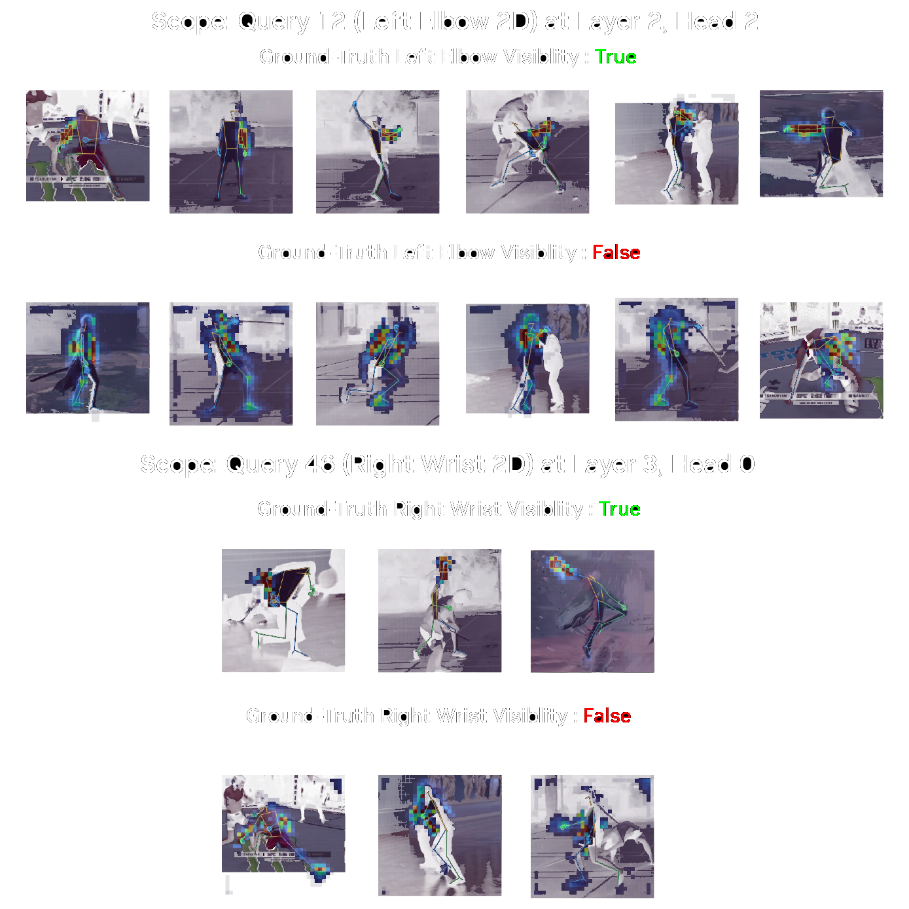
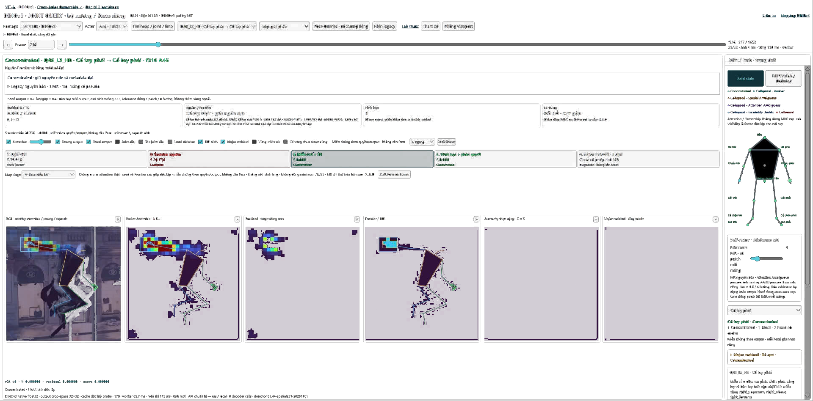
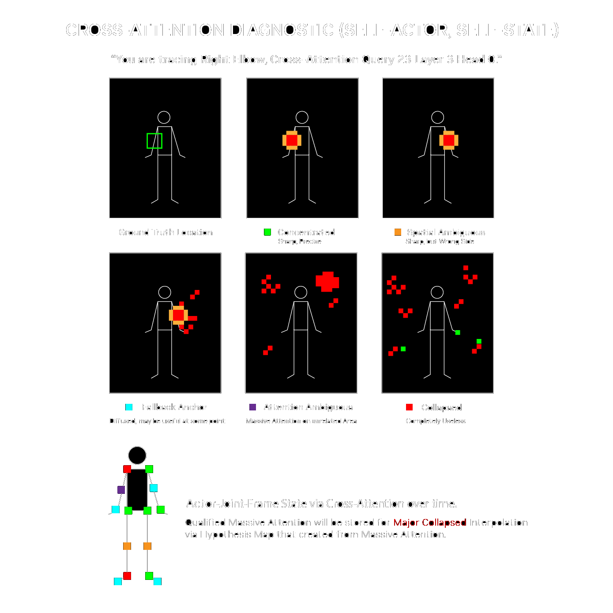
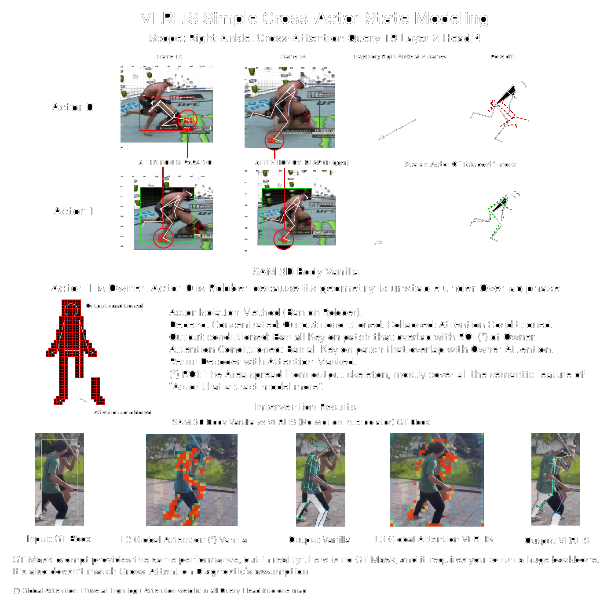
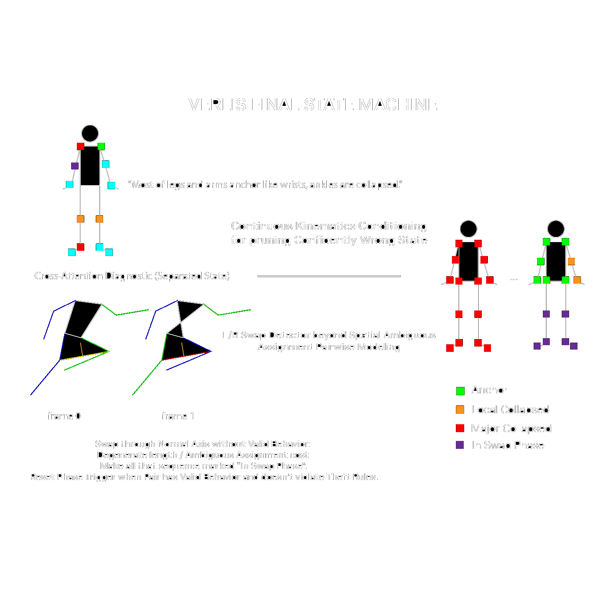
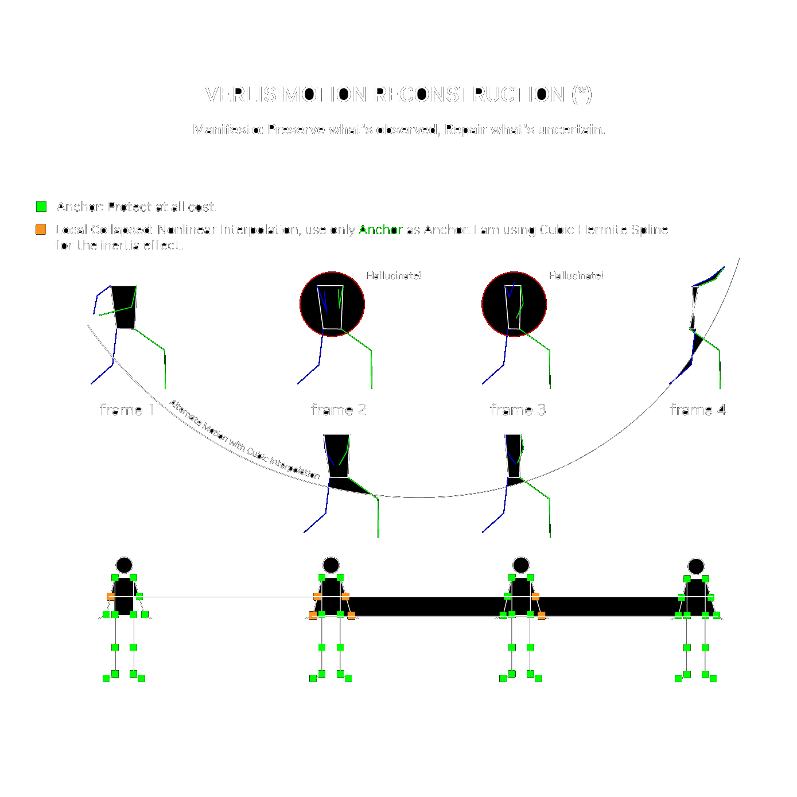
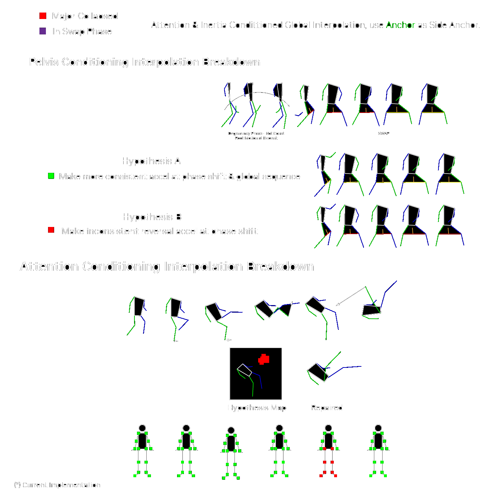

The Problem
The strongest HMR methods today arguably belong to two factions: Single-Frame vs. Temporal Transformers.
Single-frame models can be incredibly sharp when visual evidence is clear, but become fragile under uncertainty without temporal information to rescue them. Temporal Transformers have that advantage, but often end up manipulating sequences of tokens and regressing toward ugly, averaged-out solutions instead of actually looking at what happened. Sure, that might be good for MPJPE. But we're doing motion capture, and those are not the same thing. The power of a sword slash cannot be compressed into a millimeter-level error metric and call it “pass”.
Unacceptable!
VERLIS exists for a divine purpose - minimize that trade-off: Temporal Consistency vs. Local Fidelity. Don't touch what was already right just because it doesn't satisfy some loss function. Just repair what's truly uncertain.

I use SAM 3D Body as a powerful single-image HMR foundation, then build a Latent Supervisor around it to detect failure and selectivity recover the incomplete motion.
Results
On my stress test, VERLIS show huge improvement to vanilla SAM 3D Body under visual degrading, recover unusual pose while preserving local motion fidelity at clear frames.
But at the start...
Like everyone else, I initially tried patching single-image HMR from both ends. Segmentation, tracking, even Stable Diffusion for Input. Kalman filters, Temporal Transformers, Factor Graphs, and countless heuristics for output. Months of work for nothing. But it make me stop a moment and make a quite difference approach in HMR: Why we don’t go inside the model?
A Temporal Transformer can only guess what's right or wrong from an already uncertain pose sequence, some method don’t even “see the video”. Tracking can suggest where the model should look, but knowing where to look is quite different from actually seeing anything useful.
So, as a Computer Vision researcher, I stop Number Analysis. I asked a different question:
“Can the model actually see that damn target?”
And if we can know what it sees, what it doesn’t, can we isolate the refinement space and preserve true prediction?Decoder Cross-Attention was a natural place to start. It exposes where the model attends to the visual features.
Cross-Attention Diagnostic
I ran vanilla SAM 3D Body over 2,308 actor-frames across different visibility conditions, extracting attention from 146 Queries × 6 Layers × 8 Heads per frame.

I built an inspection tool to identify Query-Layer-Head combinations (QLHs) with consistent anatomical behavior across these frames. It was to turn latent attention into joint-level diagnostic signals.

For example, with DINOv3, Q46L3H0 consistently attends to regions around the right wrist, hand, and forearm. I compare its attention distribution with the predicted joint's position in patch-aligned crop space, then examine whether significant attention mass appears inside or outside anatomically permitted regions.
I call sufficiently large, high-weight attention regions Major Residuals (MRs). Their location and spatial relationships help distinguish Concentrated, Fallback Anchor, Spatial Ambiguous, Attention Ambiguous, and Collapsed patterns.
A sharp attention map can still be confidently wrong. And some apparently collapsed attention still contains useful hypotheses.So this isn't an infallible Failure Detector. It's a Cross-Attention Diagnostic.
Each actor-frame-joint receives a Self-State. Usable MRs are preserved in a Hypothesis Map for reconstruction later.

Cross-Actor Diagnostic
Sometimes the model doesn't lose a limb. It steals one from another actor. Instead of repairing the stolen skeleton afterward, I intervene in the visual evidence available to the decoder itself.
When actor bounding boxes overlap, I compare qualified attention regions QLH-to-QLH and joint-to-joint. Sufficient overlap is labeled Violated; otherwise, Separated.
The current implementation examines transitions from Separated to Violated and compares attention-patch displacement between consecutive frames to determine who owns the disputed evidence: Owner or Robber.
Then I ban the conflicting attention keys associated with the Owner from the Robber's decoder pass, rerun the decoder, and diagnose the updated predictions again, then provide Separated-State (It means Self-State but after rerun decoder).
Actors without overlap bypass this intervention and proceed to Separated-State.

What works: This relatively simple mechanism already handles many of my tested heavy overlap sequences like UFC, particularly one-directional contamination with clean Separated anchors at both ends. In comparable experimental cases, it can achieve results similar to GT-mask prompting.
What breaks: Complete identity exchanges and sustained actor entanglement can defeat frame-level ownership decisions. And if the occluding person was never processed by the decoder, there is no corresponding actor evidence to compare in the first place.
I'm developing a Delay Commitment mechanism to track overlap regions and their identities across time instead of making every ownership decision frame by frame. Still under research.
Final State Machine
Cross-Attention cannot expose every failure. A joint may look perfectly confident while the left and right limbs have quietly exchanged identities.
So I added kinematic consistency checks, support-leg constraints, global anatomical reliability, and joint-connectivity assignment to detect suspicious L/R Swap phases while filtering legitimate rotations and noisy frames.

The output is a Final-State for each actor-frame-joint. It determines what the reconstruction stage is allowed to touch.
Anchor: Protect it at all costs.
Local Collapsed: Recover from trusted anchors only.
Major Collapsed: Permit attention-conditioned hypothesis reconstruction under motion and geometric constraints.
In Swap Phase: An additional tag controlling left/right reassignment, not a license to interpolate everything. Even during a swap, an Anchor must remain at one of the two valid vanilla output positions after L/R reassignment.
Motion Reconstruction
“Preserve what's observed. Repair what's uncertain.”
Local Collapsed: Bridge the Gap

I use Cubic Hermite Spline between trusted anchors to restore continuity while leaving reliable observations alone.
Major Collapsed: Recover What the Bridge Erases

Two anchors can produce a perfectly smooth curve. Unfortunately, the actual movement between them might have been a ridiculous kick, a sudden reversal, or some other unusual pose that the curve simply deletes.
Major Collapsed is not just stronger smoothing. I separate Root Motion from Articulation, estimate motion from valid anchors, then use the saved Hypothesis Map with hip, inertia, spatial, and temporal constraints to search for valid poses hidden in the latent evidence before the final regression discarded them.
For In Swap Phase, I use valid pelvis vertical angular acceleration to condition paired-limb rotation, resolve L/R assignment first, then route each joint according to its underlying state.
No valid attention hypothesis? Fall back to Cubic Hermite.
That fallback can maintain continuity, but it won't magically recover an unusual pose without enough evidence.
MHR Fitting
The reconstructed pseudo-joints still need to become a valid pose in SAM 3D Body's Momentum Human Rig (MHR) representation.
I reproject them into 2D and use the native MHR IK Solver to fit the corrected keypoint constraints back into an articulated MHR pose, instead of building another heavyweight optimization pipeline.
What Still Breaks?
The current interpolator still relies on one-dimensional scalar conditioning in parts of its hypothesis selection. Attention jitter or invalid reversals motion under threshold can survive the checks, producing residual jitter in extreme sequences, including the million-slash demo or moderated visual degrade - not enough to flag, but still a failure.
It also cannot reliably detect micro-jitter when attention remains concentrated. Blindly smoothing those joints would risk destroying motion that was already correct. And when attention evidence is insufficient, Hermite fallback can preserve continuity but oversmooth the missing action. These are the failures I'm going after next.
VERLIS won't stop while I can still find something that breaks it. But for now, perhaps it's time to return to the reason this whole thing started.
Vengeance.
Explore next
Vengeance · Main Track · Film Project
June 1, 2026 · The Day I First Installed Anaconda, Knowing Almost Nothing About Machine Learning - Story in Workshop.